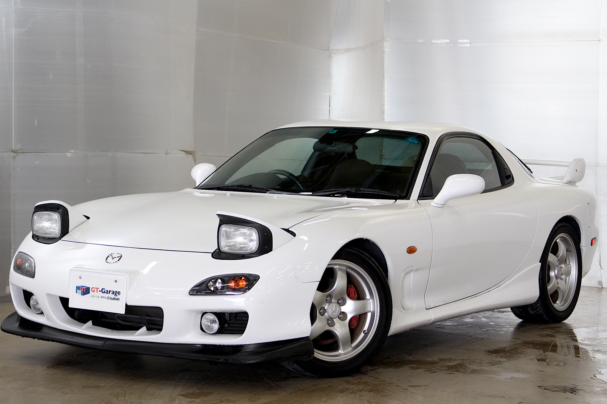
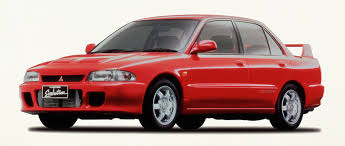
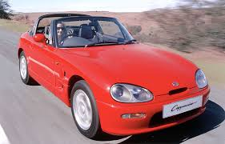
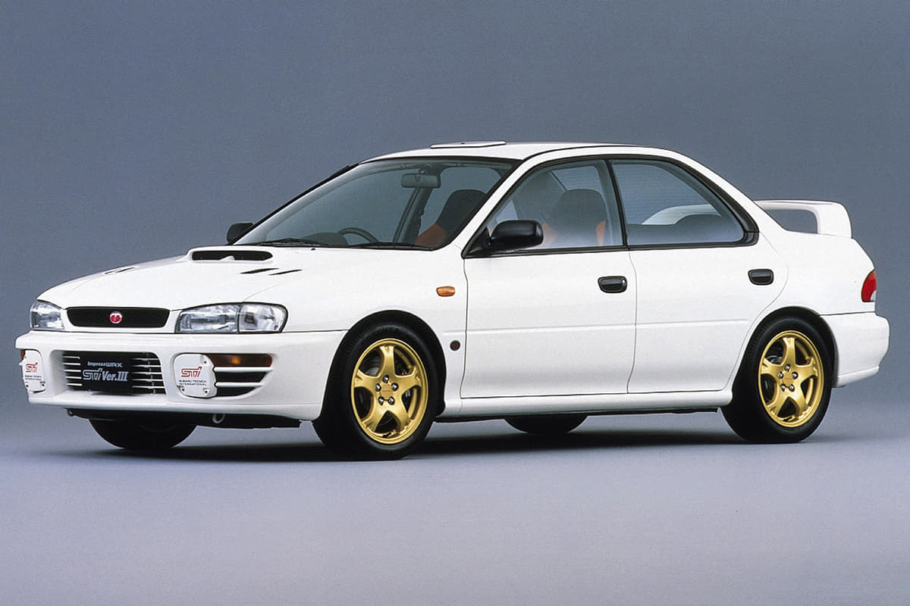
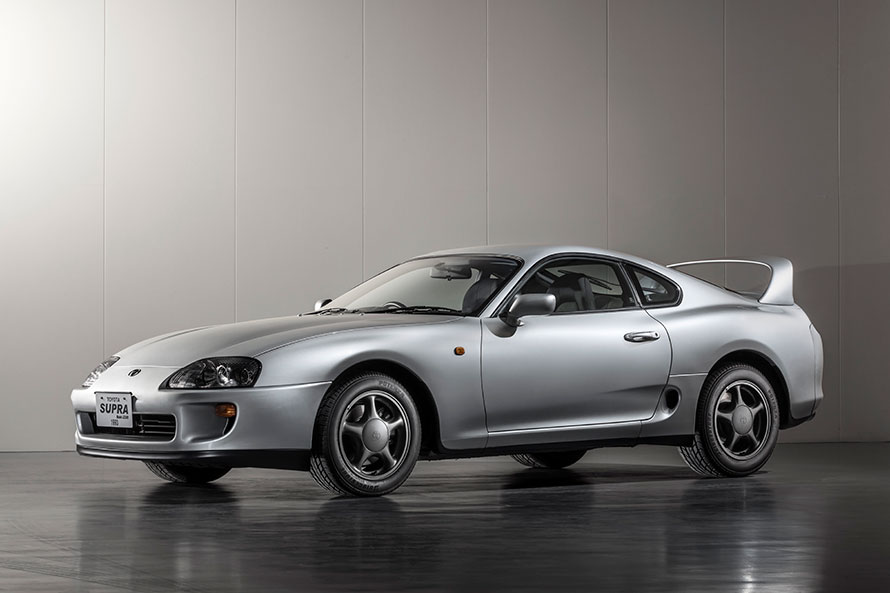
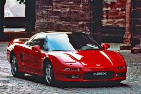
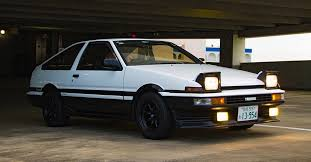
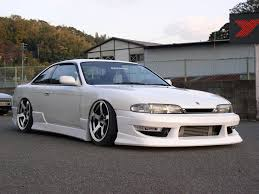
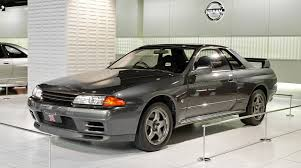

マツダのスポーツカーで、ロータリーエンジンを搭載しています。1980年代から2002年まで製造されました。
RX-7は、その特徴的なリアホイールドライブと軽量ボディで知られており、スポーツカー愛好家の間で広く人気があります。
レースやドリフトシーンでも頻繁に見かけられます。

三菱の高性能セダンで、ラリー競技での活躍が有名です。1992年から2016年まで製造されました。
ランサーエボリューションは、その卓越した操縦性とパワフルなエンジンで知られています。
WRCでの成功やラリードライバーの支持を受け、世界中でファンを持っています。

スズキの軽量スポーツカーで、小さなボディサイズとリトラクタブルルーフの特徴があります。
カプチーノは、その小さなサイズと軽快な走りで人気を博しました。
スポーツカーの魅力を手頃な価格で提供しています。

日産の人気のあるリアホイールドライブのクーペで、ドリフトシーンでの人気が高いです。
180SXは、そのスタイリッシュな外観とスポーティな走行性能で知られています。
若いドライバーやカスタムカー愛好家の間で特に人気があります。
スバルの高性能セダンで、WRCでの成功やターボチャージドエンジンが特徴です。
インプレッサWRXは、そのスポーティな外観と優れた走行性能で注目を集めました。
ラリードライバーから一般のドライバーまで、幅広い層に人気があります。

トヨタのスポーツカーで、2JZエンジンやボディスタイリングの進化が特徴です。
スープラは、その強力なエンジンと洗練されたデザインで知られています。
チューニングやレースシーンでも非常に人気があります。

ホンダのスーパーカーで、アルミニウムボディやVTECエンジンが特徴です。
NSXは、その高性能と洗練されたデザインで称賛されています。
スーパーカー市場での地位を築き、ドライビングの楽しさを追求する人々に愛されています。

トヨタの後輪駆動のクーペで、ドリフトシーンでの人気が高いです。
AE86は、その軽量でバランスの取れたシャシーと素直な操縦性が特徴で、
ドリフト愛好家によって広く支持されています。
日本国内外のカスタムカー愛好家にとって、そのパフォーマンスとカルチャーアイコンとしての地位が確立されています。

日産のリアホイールドライブのスポーツクーペで、ドリフトやチューニングのシーンで人気があります。
シルビアは、そのスタイリッシュな外観とスポーティな性能で広く知られています。
様々なモデルが存在し、そのエンジンパワーと操縦性能は、スポーツカー愛好家やパフォーマンス志向のドライバーにとって魅力的な選択肢となっています。

日産の高性能セダンで、GTRモデルの伝説やエンジンの性能が特徴です。
スカイラインは、そのスポーティな外観と豪華な内装で人気を集め、
高速道路やサーキットでの優れたパフォーマンスを誇っています。
日本国内外の自動車ファンから多くの支持を得ています。
